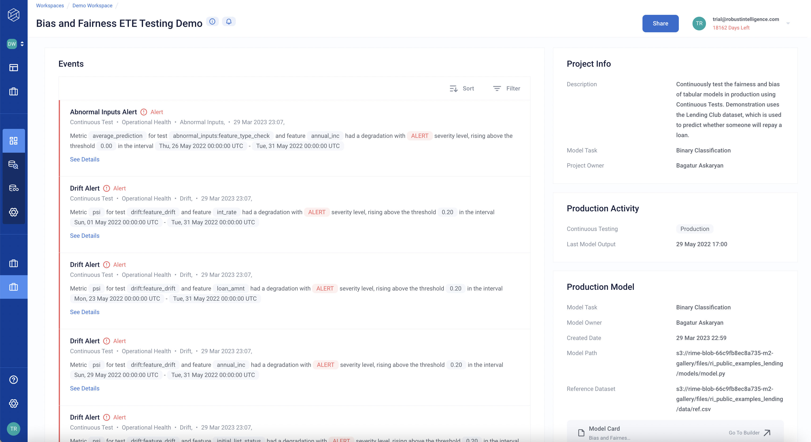

Project Overview
The Project Overview is the landing page of a project in Robust Intelligence. It provides a summary for all testing failure events and information about the production model.
Project Overview breakdown
Events Table
The Events table displays a list of all events associated with tests failures in the project.
Clicking on an event, navigates you to further details about the testing failure.
Clicking Resolve on the Event removes that Event from the table.
The table can be filtered or sorted by Severity or Risk Category Type to prioritize displaying specific events.
Project Information
The Project Info provides high level information about the project. This project information can be edited via the Project Settings tab in the left sidebar. The project information contains:
Project Description
Model tasks associated with project
Project Owner
Production Model
The Production Model info provides high level information about the production model. This cannot be edited. The production model information contains:
Model Task
Model Owner
Created Date
Last Model Output - the date-timestamp of the model’s last prediction
Reference Dataset - the dataset the production model was trained on
Model Cards - navigates to model card builder for production model
Operational Risk
The Operational Risk can be Passing, Warning, Alert. It also provides the underlying cause of the risk:
Abnormal Inputs
Drift
Model Performance
Subset Performance Degradation
Fairness Risk
The Fairness Risk can be Passing, Warning, Alert. It also provides the underlying cause of the risk:
Bias and Fairness Risk
Security Risk
The Security Risk can be Passing, Warning, Alert. It also provides the underlying cause of the risk:
Data Poisoning Detection
Evasion Attack Detection